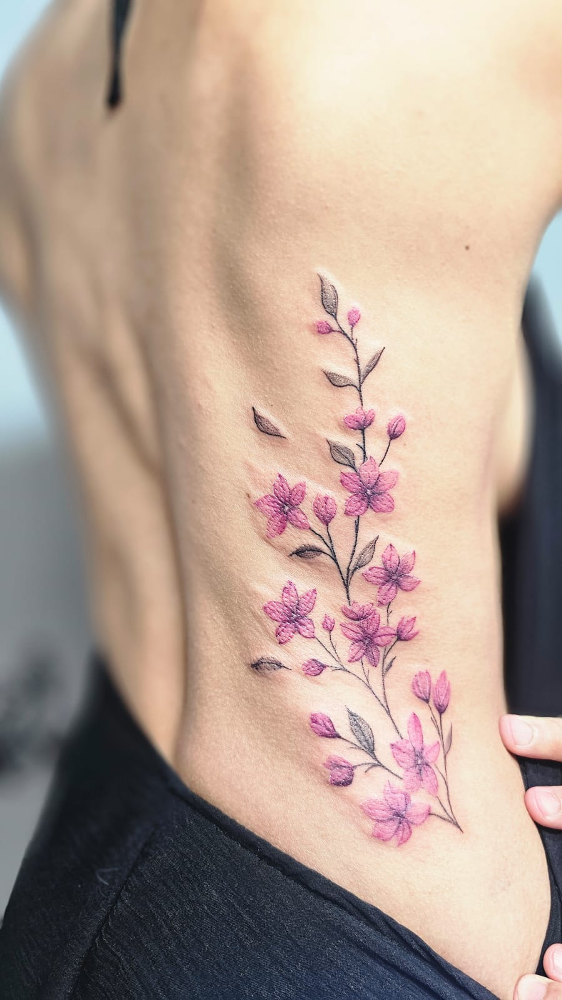
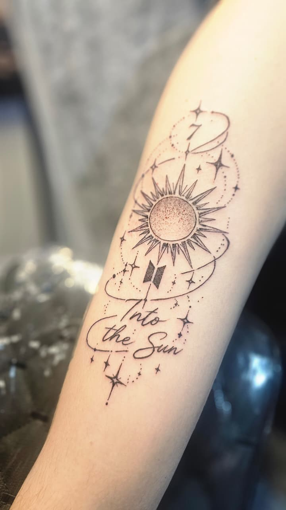
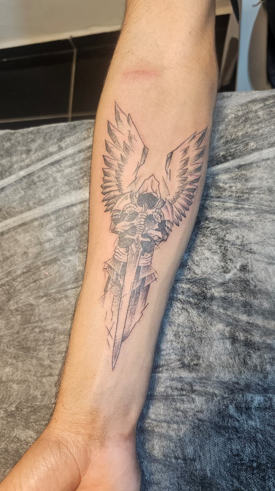
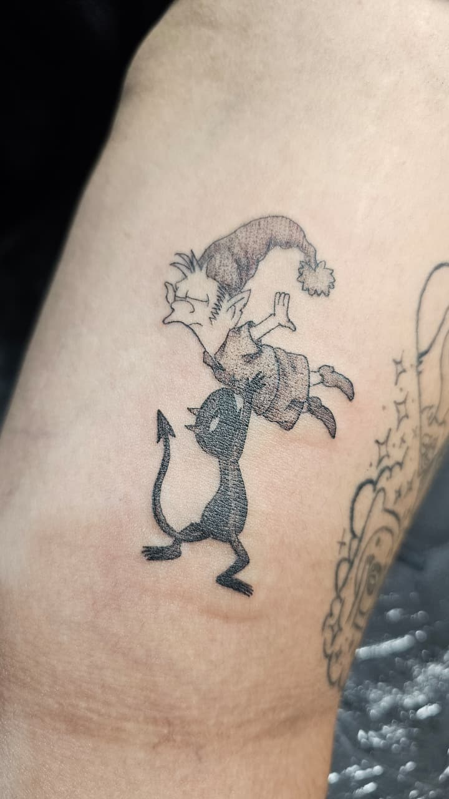
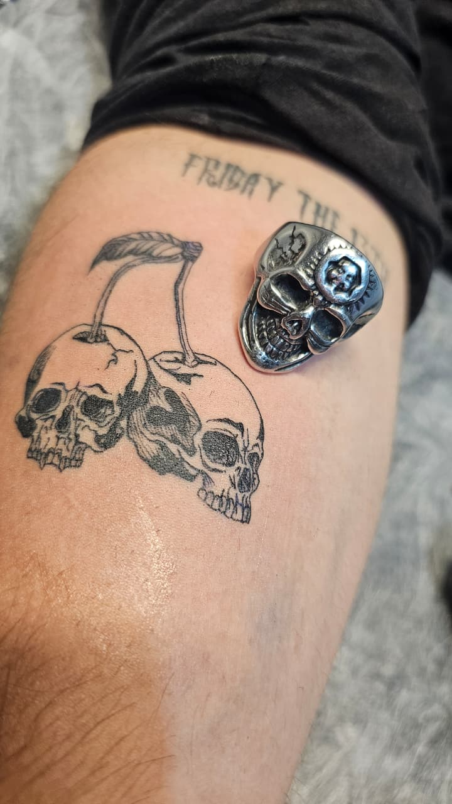
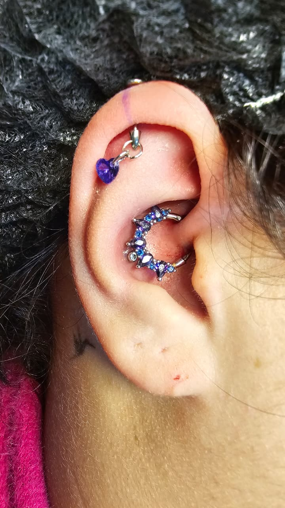
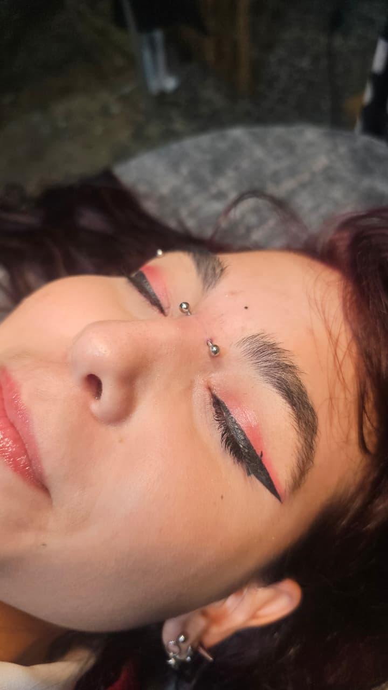
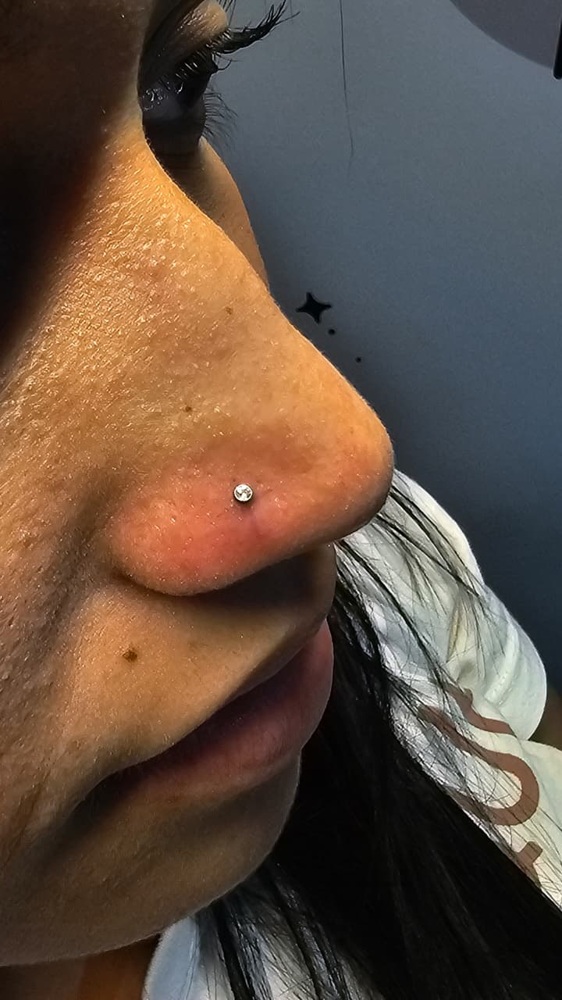

Tatuagem e body piercing · Lins/SP
Arte na pele, com a cara do Duck.
Tatuagens autorais e perfurações feitas pela Yasmin Nunes, com atendimento personalizados, do orçamento ao pós-cuidado.

Quem faz
Yasmin Nunes
Sou a Yasmin, tatuadora e body piercer em Lins/SP e criadora do Duck Tattoo. Do floral delicado ao personagem favorito do seu game ou anime, cada trabalho é desenhado pensando em quem vai carregá-lo.
Tatuo há cerca de 10 anos e sigo sempre aprimorando minhas técnicas para entregar o melhor resultado para cada cliente. Tenho vários cursos em biossegurança e estou sempre me atualizando sobre novas técnicas de perfuração, porque segurança e cuidado vêm em primeiro lugar.
10 anos
tatuando
Biossegurança
vários cursos e atualização constante
Destaque Empresarial 2026
Reconhecimento recebido pelo Duck Tattoo em Lins.
Portfólio
Tatuagens
Estilos variados, sempre com traço firme e cor que dura. Veja alguns trabalhos e mais no Instagram.










Body piercing
Perfurações e joias
Perfurações feitas com material descartável e joias selecionadas para cada região. Monte sua orelha do seu jeito ou escolha um piercing novo para o rosto.
Na dúvida sobre qual perfuração combina com você? Chame no WhatsApp.








Eventos
O Duck também vai até você
Além do estúdio, o Duck Tattoo participa de feiras e eventos da região, com tatuagens e perfurações feitas na hora. Acompanhe a agenda pelo Instagram.
Ver agenda no InstagramPasso a passo
Como funciona
- 1 Chame no WhatsApp Envie sua ideia, referências, tamanho e local do corpo.
- 2 Receba o orçamento Conversamos sobre o desenho e você recebe o valor.
- 3 Agende a sessão Escolha um dia dentro dos horários de atendimento.
- 4 Cuide bem Você sai com as orientações de pós-cuidado para cicatrizar bem.
Atendimento
Horários
Atendimento com hora marcada. Chame no WhatsApp para agendar.
Onde estamos
Lins/SP
Morumbi – Lins/SP
CEP 16400-639
Tem uma ideia? Bora tirar do papel.
Mande sua referência, o tamanho aproximado e o local do corpo. O orçamento é pelo WhatsApp ou pelo Direct.